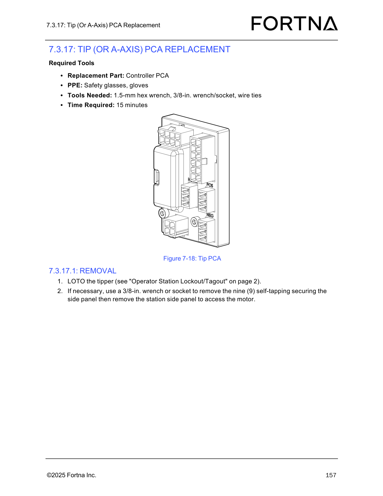

| Procedure ID | proc_remove_tip_a_axis_controller_pca_tipper_station_loto_side_panel_v1 |
|---|---|
| Title | Remove Tip (A-Axis) Controller PCA on the Tipper Station (LOTO + side panel access) |
| Procedure Type | recovery |
| Primary Role | operator |
| Support Safe | Yes |
| Capability Tags | None |
| Access Surface | physical_floor |
| Audience Roles | operator |
| Failure Pattern Tags | None |
| Validation Status | needs_sme_review |
| Merge Status | source_finalized |
Prepare the tipper for on-site Tip (or A-Axis) Controller PCA replacement by performing LOTO and removing the station side panel (when necessary) to access the motor/controller area.
Use when you need to replace the Tip (or A-Axis) Controller PCA and must first isolate the tipper (LOTO) and gain access to the motor/controller area by removing the station side panel if required.

Responsible role: operator
Instruction:
At the tipper station, perform LOTO for the tipper using the referenced "Operator Station Lockout/Tagout" procedure (page 2).
Expected result:
The tipper is locked out/tagged out.
Stop or Escalate If:
Responsible role: operator
Instruction:
If necessary, use a 3/8-in. wrench or socket to remove the nine (9) self-tapping securing screws for the station side panel, then remove the station side panel to access the motor.
Expected result:
The station side panel is removed (or confirmed unnecessary) such that the motor/controller access area is reachable.
Stop or Escalate If: